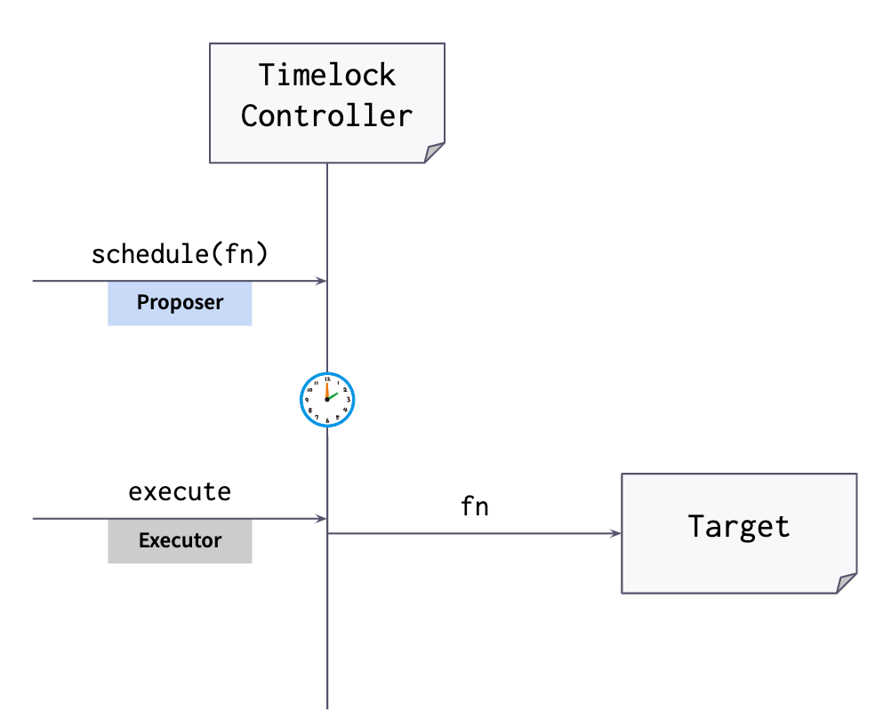
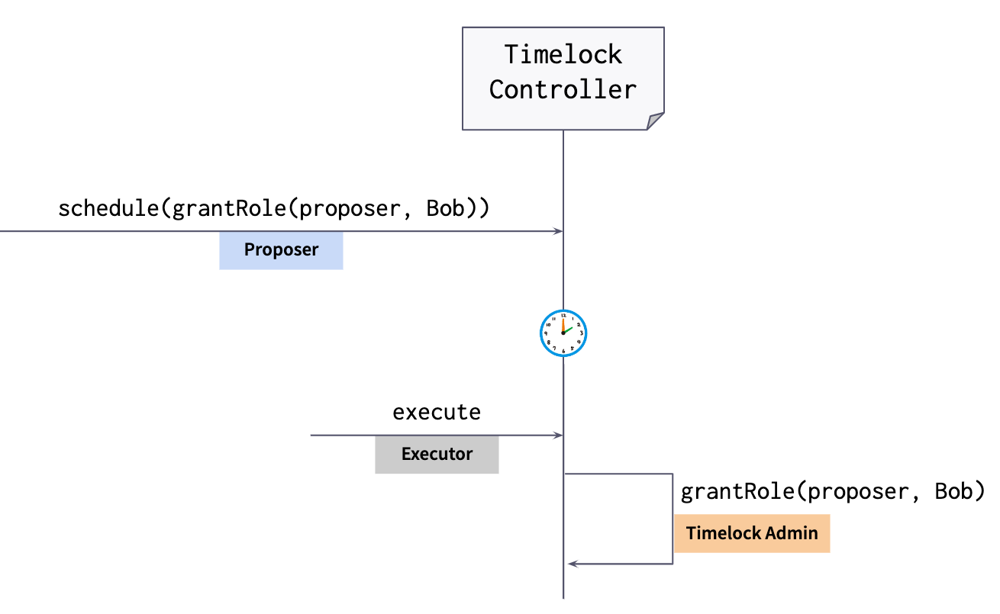

<!doctype html>
<html lang="en">
  <head>
    <meta charset="utf-8">

    <title> Design Patterns </title>

    <meta name="author" content="Dhruvin Parikh">

    <meta name="apple-mobile-web-app-capable" content="yes" />
    <meta name="apple-mobile-web-app-status-bar-style" content="black-translucent" />

    <meta name="viewport" content="width=device-width, initial-scale=1.0, maximum-scale=1.0, user-scalable=no, minimal-ui">

    <link rel="stylesheet" href="../../../reveal.js/css/reveal.css">
    <link rel="stylesheet" href="../../../reveal.js/css/theme/moon.css" id="theme">

    <!-- Code syntax highlighting -->
    <link rel="stylesheet" href="../../../reveal.js/lib/css/zenburn.css">

    <!-- Printing and PDF exports -->
    <script>
      var link = document.createElement( 'link' );
      link.rel = 'stylesheet';
      link.type = 'text/css';
      link.href = window.location.search.match( /print-pdf/gi ) ? '../../../reveal.js/css/print/pdf.css' : '../../../reveal.js/css/print/paper.css';
      document.getElementsByTagName( 'head' )[0].appendChild( link );
    </script>

    <!--[if lt IE 9]>
    <script src="../reveal.js/lib/js/html5shiv.js"></script>
    <![endif]-->

    <style>
      .reveal .slides h1, .reveal .slides h2, .reveal .slides h3 {
        text-transform: none;
      }

      .two-column {
        display: flex;
        flex-wrap: wrap;
      }

      .two-column em {
        margin: 20px;
      }

      .credits {
          font-size: small;
      }
    </style>
  </head>

  <body>
    <div class="reveal">
      <div class="slides">

<!------------------------------------------------------->


<section data-markdown><script type="text/template">

### Metana Web3 Solidity Bootcamp

#### Design Patterns

*Dhruvin Parikh, April 2023*

</script></section>

<section data-markdown><script type="text/template">

## Class Plan
* Authorization
* Control
* Maintenance
* Security
</script></section>

<section data-markdown><script type="text/template">

## Authorization

* Access restriction
* Multiple authorization
* Ownership
* Roles

</script></section>

<section data-markdown><script type="text/template">

## Access restriction

* Limit what account can do an action
* Can use a modifier

```
modifier restriction(bool _condition) {
    require(_condition);
    _;
}

function transferOwnership(address newOwner) public onlyOwner 
    restriction(newOwner != address(0)) {
    ...
}
```

</script></section>

<section data-markdown><script type="text/template">

## Multiple Authorization

* Require more than one account to do an action
* Can be M of N
* Owner to set N, M of N to change
* Danger if several keys are lost
* [multi-sig](https://github.com/metana-bootcamp/web3-solidity-course/blob/main/notes/008_design_patterns/examples/multi-sig)
</script></section>

<section data-markdown><script type="text/template">

## Ownership

* Restricts features of contract to owner
* Allows for transfer of ownership
* OpenZeppelin code for pattern 
    
</script></section>

<section data-markdown><script type="text/template">

## Ownership
* Smart contracts act like accounts
* Ownership is required to limit access to certain account activities
* It may be desirable to transfer ownership
* You can have different types of ownership
* [`Ownable.sol`](https://github.com/OpenZeppelin/openzeppelin-contracts/blob/4961a51cc736c7d4aa9bd2e11e4cbbaff73efee9/contracts/access/Ownable.sol)
* [`Ownable2Step.sol`](https://github.com/OpenZeppelin/openzeppelin-contracts/blob/788d6a129a342d7a23a91ad553479e861845a9b2/contracts/access/Ownable2Step.sol)
</script></section>

<section data-markdown><script type="text/template">

## Roles

* Role Based Access Control (RBAC)
* Create roles
* Assign users to roles
* Assign roles to methods
* OpenZeppelin implementation
</script></section>


<section data-markdown><script type="text/template">

## Role Based Access Control
* Different classes of users with different rights to do things with your contract
* Add and remove accounts from having a role
* Verify if an account has access to do something
* [`AccessControl.sol`](https://github.com/OpenZeppelin/openzeppelin-contracts/blob/4961a51cc736c7d4aa9bd2e11e4cbbaff73efee9/contracts/access/AccessControl.sol)
</script></section>

<section data-markdown><script type="text/template">

## Role Based Access Control
* Track the different roles in your contract
* Add and remove roles
* A starting point for more advanced access control
* [`RBAC.sol`](https://github.com/ConsenSysMesh/real-estate-standards/blob/69266ebf00ff9456da89845968f9680db8bb0ddb/node_modules/openzeppelin-solidity/contracts/ownership/rbac/RBAC.sol)
* [`ACL.sol`](https://github.com/nayms/contracts/blob/bfa33e8bf733d11289a8c6abce96be683606f69d/contracts/ACL.sol)
</script></section>


<section data-markdown><script type="text/template">

## Setting up Access Control with Roles
* Ownable
* Granular Access control
* [`AccessControl.sol`](https://github.com/OpenZeppelin/openzeppelin-contracts/blob/4961a51cc736c7d4aa9bd2e11e4cbbaff73efee9/contracts/access/AccessControl.sol)
* Case Study : TimelockController 
</script></section>


<section data-markdown><script type="text/template">

## Simple access control: Ownable

```
Contract Ownable {
    function owner view returns(address);
    function transferOwnership(Address newOwner) onlyOwner;
    function renounceOwnership() onlyOwner;
}
```

```
contract NFT is Ownable {
    ownerOf()
    transfer()
    mint() onlyOwner
    owner()
}
```
</script></section>


<section data-markdown><script type="text/template">

## Granular Access Control
```
import "AccessControl.sol"

contract StableCoin is ERC20, AccessControl {
    balanceOf()
    transfer()
    setFee() onlyRole(feeSetter)
    emergencyShutdown() onlyRole(auth)
}
```
</script></section>


<section data-markdown><script type="text/template">

## Access Control Interface
```
interface IAccessControl {
    event RoleAdminChanged(bytes32 indexed role, bytes32 indexed previousAdminRole, bytes32 indexed newAdminRole);
    event RoleGranted(bytes32 indexed role, address indexed account, address indexed sender);
    event RoleRevoked(bytes32 indexed role, address indexed account, address indexed sender);
    
    function hasRole(bytes32 role, address account) external view returns (bool);
    function getRoleAdmin(bytes32 role) external view returns (bytes32);
    function grantRole(bytes32 role, address account) external;
    function revokeRole(bytes32 role, address account) external;
    function renounceRole(bytes32 role, address account) external;
}

bytes32 constant MINTER_ROLE = keccak256("MINTER_ROLE");
require(hasRole(MINTER_ROLE,msg.sender));
_setupRole(MINTER_ROLE,msg.sender);
```
</script></section>


<section data-markdown><script type="text/template">

## Granting and Revoking Roles
```
contract IAccessControl {
    function grantRole(bytes32 role, address account) onlyAdmin(role);
    function revokeRole(bytes32 role, address account) external onlyAdmin(role);
    function getRoleAdmin(bytes32 role) view returns(bytes32);
}
```
</script></section>


<section data-markdown><script type="text/template">

## Default Admin
* Every role initial has a global default admin role
* No default admin accounts
```
function_SetRoleAdmin(bytes32 role) internal;
```
</script></section>

<section data-markdown><script type="text/template">

## Renouncing
```
contract IAccessControl {
    function renounceRole(bytes32 role, address account) external;
}
```
</script></section>

<section data-markdown><script type="text/template">

## CaseStudy : TimelockController


</script></section>

<section data-markdown><script type="text/template">

## CaseStudy : TimelockController

</script></section>

<section data-markdown><script type="text/template">

## TimelockController
```
contract TimelockController is AccessControl {
    bygtes32 public constant TIMELOCK_ADMIN_ROLE = keccak256("TIMELOCK_ADMIN_ROLE");
    bytes32 public constant PROPOSER_ROLE = keccak256("PROPOSER_ROLE");
    bytes32 public constant EXECUTOR_ROLE = keccak256("EXECUTOR_ROLE");

    constructor(uint256 minDelay) {
    _setRoleAdmin(TIMELOCK_ADMIN_ROLE,TIMELOCK_ADMIN_ROLE);
    _setRoleAdmin(PROPOSER_ROLE,TIMELOCK_ADMIN_ROLE);
    _setRoleAdmin(EXECUTOR_ROLE,TIMELOCK_ADMIN_ROLE);

    _setRole(TIMELOCK_ADMIN_ROLE,_msgSender());
    _setRole(TIMELOCK_ADMIN_ROLE,address(this));

    ...
    }  
    ...
}
```
</script></section>
    
    
<section data-markdown><script type="text/template">

## Security

* Balance Limit
* Checks-effects-interaction
* Emergency Stop
* Mutex
* Rate Limit
* Secure Transfer
* Speed Bump

</script></section>
    
<section data-markdown><script type="text/template">

## Balance Limit

* Set a lower limit on account balance 

```
uint256 public limit; 

function LimitBalance(uint256 value) public {   
    limit = value; 
} 

modifier limitedPayable() {   
    require(this.balance <= limit);   
    _; 
} 

function deposit() public payable limitedPayable {   
    // some code 
}
```        
</script></section>


<section data-markdown><script type="text/template">

## Checks-effects-interaction

* Avoid problems with stack and reentrancy   

```
function withdraw(uint amount) public {        
    require(balances[msg.sender] >= amount);        
    balances[msg.sender] -= amount;        
    msg.sender.transfer(amount);    
}
```

</script></section>

<section data-markdown><script type="text/template">

## Emergency Stop

* Stop or pause transfers
* Overcome concerns with immutability
* Could be abused

</script></section>

<section data-markdown><script type="text/template">

## Mutex

* A way to avoid reentrancy

```
mapping(address => bool) mutex;

modifier preventRecursion() {    
    if(mutex[msg.sender] == false) {    
        mutex[msg.sender] = true;    
        _;    
        mutex[msg.sender] = false;    
    }
}
```
</script></section>

<section data-markdown><script type="text/template">

## Rate Limit

* Limit how often a function can happen over time

```
uint enabledAt = now;

modifier enabledEvery(uint t) {   
    if (block.timestamp >= enabledAt) {     
        enabledAt = blok.timestamp + t;     
        _;   
    } 
} 
function f() public enabledEvery(1 minutes) {   
    // some code 
}
```

</script></section>

<section data-markdown><script type="text/template">
    
## Secure Transfer
    
* Secure transfer of eth from a contract to an account
* Handles errors 
* Handles reentrancy 
    
</script></section>

<section data-markdown><script type="text/template">

## Speed Bump 

* Put in a delay for an action to happen
* Can put in controls to revert the action
* 24hr waiting period
</script></section>

<section data-markdown><script type="text/template">

## Control 

```
* Commit and Reveal
* Guard Check
* Memory Array Building
* Oracle
* Poll
* Pull Payment
* Randomness
* Safemath (Below 0.8.0)
* State Machine
* String Equality Comparison
* Token
```
</script></section>

<section data-markdown><script type="text/template">

## Commit and Reveal

* Commit a hash, then once all hashes are in, reveal actual values and verify with hash
* Gets around transparency of blockchain 

</script></section>


<section data-markdown><script type="text/template">

## Guard Check

* Validate parameters
* Check contract state
* Rule out strange conditions 

</script></section>

<section data-markdown><script type="text/template">

## Memory Array Building

* Avoid gas fees for retrieving storage
* Use a view function to get the storage for free
</script></section>


<section data-markdown><script type="text/template">

## Oracle

* Get off chain data on chain
* Can be used by multiple contracts
    
</script></section>


<section data-markdown><script type="text/template">

## Poll

* Polling or voting
* Used for group consensus 

</script></section>
    
    
<section data-markdown><script type="text/template">

## Pull Payment

* Recipient asks for payment
* Contract sends 
* Good for multiple payments in a transaction
* Recipient pays gas fee

</script></section>

<section data-markdown><script type="text/template">

## Randomness 
    
* Generate a random number
* Avoid predictability
* Block hash PRNG - the hash of a block as source of randomness
* Oracle RNG - randomness provided by an oracle, see Oracle pattern
* Collaborative PRNG - collaborative generation of a random number within the blockchain
    
</script></section>

<section data-markdown><script type="text/template">

## SafeMath (for Solidity version below 0.8.0) 
    
* Avoid overflows
* ALWAYS USE
* Also, multiply before you divide
    
</script></section>

<section data-markdown><script type="text/template">

## State Machine 
    
* Ensure contract passes through specific states
    
</script></section>

<section data-markdown><script type="text/template">

## String Equality Comparison
    
* Reduce gas of string comparison
* If equal length, compare hash
    
</script></section>

<section data-markdown><script type="text/template">

## Token
    
* Basic asset transfer control
    
</script></section>

<section data-markdown><script type="text/template">

## Maintenance
    
* Automatic Deprecation
* Contract composer
* Contract Factory
* Contract Registry
* Contract Relay
* Data Segregation
* Mortal
* Satellite
    
</script></section>

<section data-markdown><script type="text/template">

## Mappings
    
* Smart contracts are based on two things transfers and shared state
* Mappings are key/value pairs
* Mappings in Solidity are assumed infinite
* The value of a mapping can be a value, another mapping or a structure
* Tokens use mappings to track the owning accounts
* Registries use mappings to track who is in the registry
    
</script></section>

<section data-markdown><script type="text/template">

## Mappings

```
key1 => Value1
.... => .....
keyn => Valuen
```
```
mapping(key_type => value_type);

mapping(address => uint) public balances;

balances[msg.sender] = deposit;
```

</script></section>


<section data-markdown><script type="text/template">

## Mappings
    
```
struct Student {
    uint age; 
    string name;
}
mapping (address => Student) public class;

Student memory newStudent;

newStudent.age = 21;

newStudent.name = “Alice”;

class[msg.sender]=newStudent;
```
</script></section>


<section data-markdown><script type="text/template">

## Mappings
    
```
mapping(address => mapping(uint => bool)) lotterypicks;

lotterypicks[msg.sender][2456738992] = true;
```
</script></section>

<section data-markdown><script type="text/template">

## Mappings
    
* There is no order to a mapping through solidity
* You can’t iterate over a mapping
* There is no syntax like in other languages where you can loop though the contents of a collection
* You would have to go back to the ledger to see all of the transactions that resulted in entries to the mapping
</script></section>

<section data-markdown><script type="text/template">

## Iterators
    
* You still need to iterate in some cases
* Make sure that your case is bounded by a low enough amount that you do not run out of gas
* If you need to iterate over a larger number of items - don’t use Ethereum
</script></section>

<section data-markdown><script type="text/template">

## Arrays
    
* Arrays respect order 
* Arrays have random access
* Arrays can provide a count
</script></section>

<section data-markdown><script type="text/template">

## Arrays
    
```
uint[] prices;

prices.push(55);
prices.push(23);

uint[5] prices;
prices[0] = 55;

uint[5] prices = [uint(55), 23, 137, 67, 2];
```
</script></section>


<section data-markdown><script type="text/template">

## Arrays
    
```
struct Student {
    uint age; 
    string name;
}

Student[] public class;

Student memory newStudent;

newStudent.age = 21;
newStudent.name = “Alice”;

class.push(newStudent);
```
</script></section>

<section data-markdown><script type="text/template">

## Iterators
    
* Walk through each element of a collection
* Used for searching for matching a condition
* Apply a function to all or some entries of a collection
</script></section>

<section data-markdown><script type="text/template">

## Data Structures
    
* Simple List Using Array : Strengths
    * Reliably chronological order
    * Provides a count
    * Random access by Row Number (not Id)
</script></section>

<section data-markdown><script type="text/template">

## Data Structures
    
* Simple List Using Array : Weakness
    * random access by Id
    * No assurance of uniqueness
    * No check for duplicates
    * Uncontrolled growth of the list
</script></section>


<section data-markdown><script type="text/template">

## Data Structures
    
```
contract simpleList {  
    struct EntityStruct {    
        address entityAddress;    
        uint entityData;  
    }  
    EntityStruct[] public entityStructs;  
    
    function newEntity(address entityAddress, uint entityData) public returns(uint rowNumber) {    
        EntityStruct memory newEntity;    
        newEntity.entityAddress = entityAddress;    
        newEntity.entityData    = entityData;    
        entityStructs.push(newEntity)
        return entityStructs.length - 1;  
    }  
    
    function getEntityCount() public constant returns(uint entityCount) {    
        return entityStructs.length;  
    }
}
```
</script></section>

<section data-markdown><script type="text/template">

## Data Structures : Strengths

* Random access by unique Id 
* Assurance of Id Uniqueness
* Enclose arrays, mappings, structs within each "record"
</script></section>

<section data-markdown><script type="text/template">

## Data Structures : Mapping with Struct

* Unable to enumerate the keys
* Unable to count the keys
* Needs a manual check to distinguish a default from an explicitly "all 0" record
</script></section>

<section data-markdown><script type="text/template">

## Data Structures

```
contract mappingWithStruct {  
    struct EntityStruct {    
        uint entityData;    
        bool isEntity;  
    }

    mapping (address => EntityStruct) public entityStructs;  
    
    function isEntity(address entityAddress) public constant returns(bool isIndeed) {    
        return entityStructs[entityAddress].isEntity;  
    }  
    
    function newEntity(address entityAddress, uint entityData) public returns(bool success) {    
        if(isEntity(entityAddress)) revert();     
        entityStructs[entityAddress].entityData = entityData;    
        entityStructs[entityAddress].isEntity = true;    
        return true;  
    }
    function deleteEntity(address entityAddress) public returns(bool success) {    
        if(!isEntity(entityAddress)) revert();    
        entityStructs[entityAddress].isEntity = false;    
        return true;  
    }  
    
    function updateEntity(address entityAddress, uint entityData) public returns(bool success) {    
        if(!isEntity(entityAddress)) revert();    
        entityStructs[entityAddress].entityData = entityData;    
        return true;  
    }
}
```
</script></section>


<section data-markdown><script type="text/template">

## Data Structures : Array of Struct with Unique Ids : Strengths
* Random access by Row number
* Assurance of Id uniqueness
* Enclose arrays, mappings and structs with each "record"
</script></section>


<section data-markdown><script type="text/template">

## Data Structures : Mapping with Struct : Weaknesses
* No random access by Id
* Uncontrolled growth of the list
</script></section>


<section data-markdown><script type="text/template">

## Data Structures
```
contract arrayWithUniqueIds {  
    struct EntityStruct {    
        address entityAddress;    
        uint entityData;  
    }  
    EntityStruct[] public entityStructs;  
    mapping(address => bool) knownEntity;  
    
    function isEntity(address entityAddress) public constant returns(bool isIndeed) {    
        return knownEntity[entityAddress];  
    }  
    
    function getEntityCount() public constant returns(uint entityCount) {    
        return entityStructs.length;  
    }

    function newEntity(address entityAddress, uint entityData) public returns(uint rowNumber) {    
        if(isEntity(entityAddress)) revert();    
        EntityStruct memory newEntity;    
        newEntity.entityAddress = entityAddress;    
        newEntity.entityData = entityData;    
        knownEntity[entityAddress] = true;    
        entityStructs.push(newEntity)
        return  entityStructs.length - 1;  
    }  
    
    function updateEntity(uint rowNumber, address entityAddress, uint entityData) public returns(bool success) {    
        if(!isEntity(entityAddress)) revert();    
        if(entityStructs[rowNumber].entityAddress != entityAddress) revert();    
        entityStructs[rowNumber].entityData = entityData;    
        return true;  
    }
}
```
</script></section>


<section data-markdown><script type="text/template">

## Mapped Structs with Index : Pros & Cons
* ✅ Random access by unique Id or row number
* ✅ Assurance of Id uniqueness
* ✅ Enclose arrays, mappings and structs within each "record"
* ✅ List maintains order of declaration 
* ✅ Count the records
* ✅ Enumerate the Ids
* ✅ "Soft" delete an item by setting a boolean
* ❌ Uncontrolled growth of the list
</script></section>


<section data-markdown><script type="text/template">

## Data Structures
```
contract MappedStructsWithIndex {  
    struct EntityStruct {    
        uint entityData;    
        bool isEntity;  
    }  
    mapping(address => EntityStruct) public entityStructs;  
    address[] public entityList;  
    
    function isEntity(address entityAddress) public constant returns(bool isIndeed) {      
        return entityStructs[entityAddress].isEntity;  
    }  
    
    function getEntityCount() public constant returns(uint entityCount) {    
        return entityList.length;  
    }

    function newEntity(address entityAddress, uint entityData) public returns(uint rowNumber) {    
        if(isEntity(entityAddress)) revert();    
        entityStructs[entityAddress].entityData = entityData;    
        entityStructs[entityAddress].isEntity = true;    
        return entityList.push(entityAddress) - 1;  
    }  
    
    function updateEntity(address entityAddress, uint entityData) public returns(bool success) {    
        if(!isEntity(entityAddress)) revert();    
        entityStructs[entityAddress].entityData    = entityData;    
        return true;  
    }
}
```
</script></section>

<section data-markdown><script type="text/template">

## Freeing up unused data
* Deleting simple types
* Deleting arrays
* Deleting structs
* Deleting mappings
</script></section>

<section data-markdown><script type="text/template">

## Deleting simple types
* For simple types like integers, it does not really matter if your write `delete myInteger` or `myInteger = 0`. 
* It will have the same effect. 
* Depending on the context, you may choose one way over another. 
* Generally, if it is about some `calculations = 0` is easier to read and if it is only about freeing up storage delete will be easier to read.
</script></section>


<section data-markdown><script type="text/template">

## Deleting arrays
* always use `delete` for deleting arrays. 
    * create an array of length 0 for dynamic arrays 
    * set each item of the array to 0 for static arrays. 
* `delete myArr[index]` will create a gap. 
* To avoid the gap and if order of the items is not important 
``` 
myArr[index] = myArr[myArr.length - 1]; 
myArr.pop()
``` 
* Pop removes the last element and also implicitly calls `delete` on the removed element.
</script></section>


<section data-markdown><script type="text/template">

## Deleting structs

* Instead of having to write 
```
myStructInstance = new MyStruct(0,0,address(0));
``` 
* you can just write 
```
delete myStructInstance;
``` 
* It will clear out each entry of your struct with one exception (next slide)
</script></section>


<section data-markdown><script type="text/template">

## Deleting mappings

* If you have a mapping in a struct or in your state in general, Solidity cannot delete it, because it does not know the keys for the mapping. 
* Since the keys are arbitrary and not stored along, the only way to delete structs is to know the key for each stored value. 
* A value can then be deleted by `delete myMapping[myKey]`.

</script></section>


<section data-markdown><script type="text/template">

## Factory pattern
* Deployments of multiple contracts with high gas-efficiency
* Keep track of all deployed contracts
* Save gas on multiple contract deployments
* Quickly produce multiple instances of a smart contract at runtime
* Dealing with a large number of contracts that all have the same functionalities
* [clone-factory](https://github.com/metana-bootcamp/web3-solidity-course/blob/main/notes/008_design_patterns/examples/clone-factory)
</script></section>

<section data-markdown><script type="text/template">

## Factory pattern
* Generate a new smart contract
* Often used for generating new token contracts
    * Simple factory pattern
    * Cloned factory pattern - [`Clone.sol`](https://github.com/OpenZeppelin/openzeppelin-contracts/blob/788d6a129a342d7a23a91ad553479e861845a9b2/contracts/proxy/Clones.sol)
</script></section>

<section data-markdown><script type="text/template">

## Simple Factory pattern
```
// SPDX-License-Identifier: MIT
pragma solidity ^0.8.19;

contract Foundation {
    string public name;
    address public owner;

    constructor(
        string memory _name,
        address _owner
    ) public {
        name = _name;
        owner = _owner;
    }
    
}

contract FoundationFactory {
    Foundation[] private _foundations;

    function createFoundation(
        string memory name
    ) public {
        Foundation foundation = new Foundation(
            name,
            msg.sender
        );
        _foundations.push(foundation);
    }

    function allFoundations(uint256 limit, uint256 offset)
        public
        view
        returns (Foundation[] memory coll)
    {
        return coll;
    }
}

```
</script></section>

<section data-markdown><script type="text/template">

## Cons of simple factory pattern

* The gas cost for the CREATE opcode is presently 32,000 Gwei. Each time an instance of the Foundation contract is deployed, a gas fee of 32,000 Gwei is charged.
</script></section>


<section data-markdown><script type="text/template">

## Clone factory pattern

```
// SPDX-License-Identifier: MIT
pragma solidity ^0.8.19;
import "@openzeppelin/contracts/proxy/Clones.sol";
import "@openzeppelin/contracts/access/Ownable2Step.sol";

contract FoundationFactory is Ownable2Step, CloneFactory {

  address public implementation;

  event FoundationCreated(address newFoundation);

  constructor(address _implementation) {
    implementation = _implementation;
  }

  function setImplementation(address _implementation) public onlyOwner {
    implementation = _implementation;
  }

  function createFoundation(string _name) public onlyOwner {
    address clone = Clones.clone(_implementation);
    Foundation(clone).init(_name);
    emit FoundationCreated(clone);
  }
}
```

</script></section>

<section data-markdown><script type="text/template">

## Pros and cons
* ✅ Very cheap deployment
* ✅ Easily compatible current proxy based factories
* ✅ Cheaper to call than a "storage-based" proxy
* ❌ Non upgradeable
* ❌ More expensive to ccall than a natove contract (+700 gas/call)
</script></section>

<section data-markdown><script type="text/template">

## Smart Contract Development libraries
* [OpenZeppelin](https://github.com/openZeppelin/openzeppelin-contracts)
* [solidstate-solidity](https://github.com/solidstate-network/solidstate-solidity)
* [solmate](https://github.com/transmissions11/solmate)
* [Nayms Contract V2](https://github.com/nayms/contracts-v2) 
* [Nayms Contract V3](https://github.com/nayms/contracts-v3)
</script></section>


<section data-markdown><script type="text/template">

## References
* [Advances Role Based Access Control](https://hiddentao.com/archives/2020/03/21/advanced-role-based-access-control-in-solidity)
* [OpenZeppelin Access Control](https://docs.openzeppelin.com/contracts/4.x/api/access)
* [Protect Smart Contracts from Reentrancy attacks](https://medium.com/coinmonks/protect-your-solidity-smart-contracts-from-reentrancy-attacks-9972c3af7c21)
* [Blockchain Oracle Problem](https://blog.chain.link/what-is-the-blockchain-oracle-problem/)
* [Cheap Contract Deployment Through Clones](https://youtu.be/3Mw-pMmJ7TA)
* [Smart Contract best practices](https://consensys.github.io/smart-contract-best-practices/)
* [Strategies for Secure Access Controls](https://youtu.be/GjGzxmWZ5vA)
</script></section>

<section data-markdown><script type="text/template">

## End

</script></section>


<!------------------------------------------------------->


      </div>

    </div>

    <script src="../../../reveal.js/lib/js/head.min.js"></script>
    <script src="../../../reveal.js/js/reveal.js"></script>

    <script>

      // Full list of configuration options available at:
      // https://github.com/hakimel/reveal.js#configuration
      Reveal.initialize({
        controls: true,
        progress: true,
        history: true,
        center: true,

        transition: 'none', // none/fade/slide/convex/concave/zoom

	math: {
          mathjax: './lib/MathJax/MathJax.js',
          config: 'TeX-AMS_SVG-full',
	},

        // Optional reveal.js plugins
        dependencies: [
          { src: '../../../reveal.js/plugin/markdown/marked.js', condition: function() { return !!document.querySelector( '[data-markdown]' ); } },
          { src: '../../../reveal.js/plugin/markdown/markdown.js', condition: function() { return !!document.querySelector( '[data-markdown]' ); } },
          { src: '../../../reveal.js/plugin/highlight/highlight.js', async: true, callback: function() { hljs.initHighlightingOnLoad(); } },
          { src: '../../../reveal.js/plugin/math/math.js', async: true },
           // Zoom in and out with Alt+click
           { src: "../../../reveal.js/plugin/zoom-js/zoom.js", async: true },
        ]
      });

    </script>

  </body>
</html>